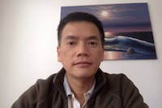

About Me
Here are few boring facts about me. Born in Vietnam. Came to US decades ago and have been living in California since. Initially, lived in Stockton, then moved to San Jose, and finally settled here in beautiful San Diego.
Graduated with a BS Chemistry from San Diego State University. After working as a medicinal chemistry for 14 years, I'd decided to go to the software field. Graduated from National University in 2011. I've been working as a SW Test engineer since.
Enjoy fishing, biking, and watching movies. Here are some of my favorites TV shows: The Big Bang Theory, The Young Sheldon, Gold Rush, The Curse Of The Oak Island, and The Dealiest Catch.